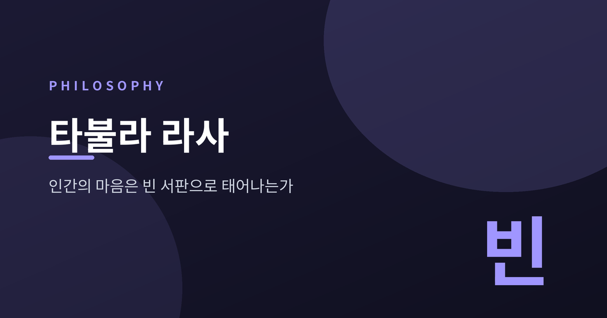
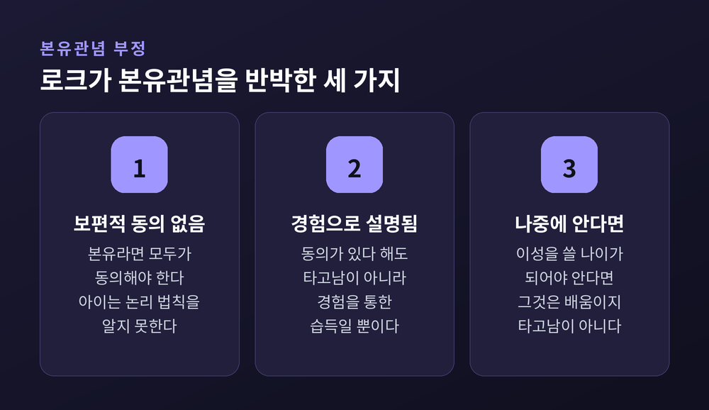
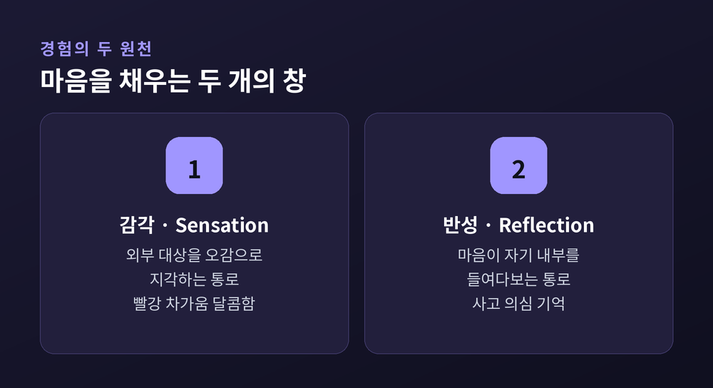
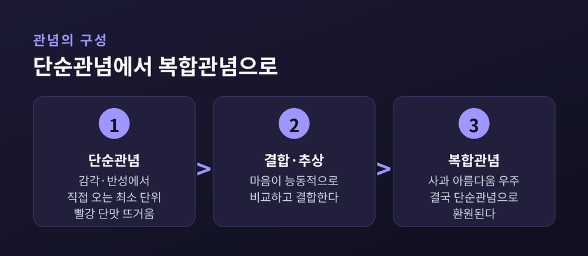
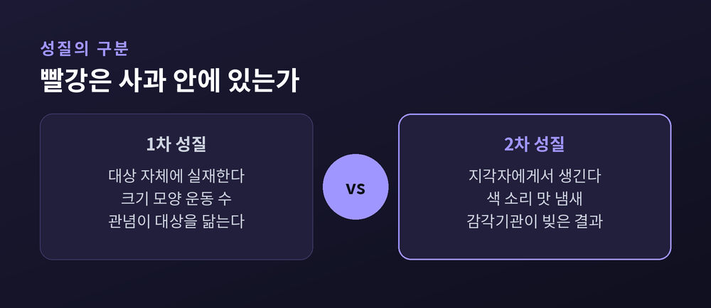
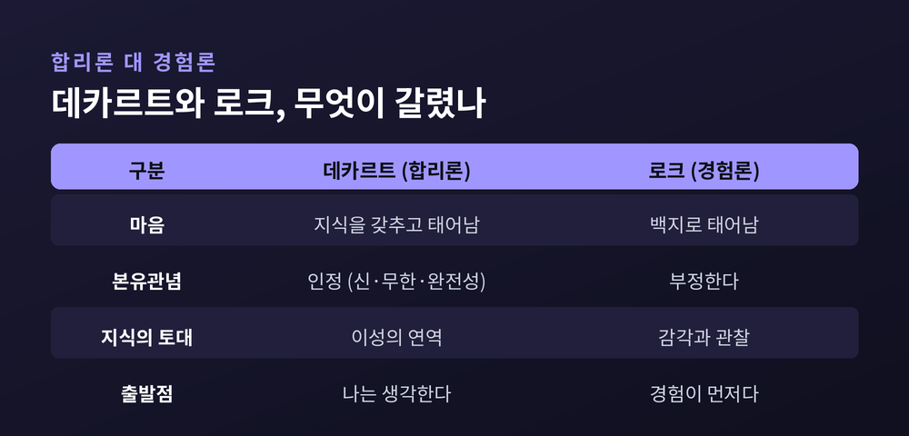
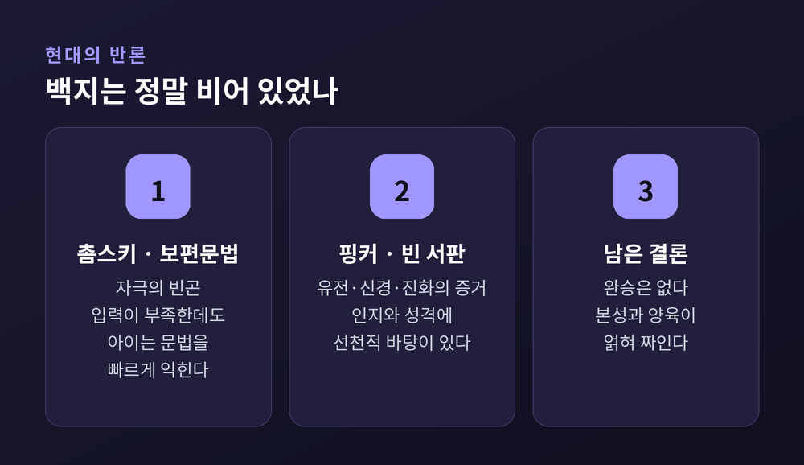

이번 글에서는 존 로크의 백지설, 곧 타불라 라사(tabula rasa)를 정리해 보겠습니다. 인간의 마음은 아무것도 쓰이지 않은 서판으로 태어나는가. 이 오래된 물음을 로크가 어떻게 세웠고, 이후 철학과 현대 과학이 어떻게 응답했는지 함께 살펴보려 합니다.

로크는 1689년 「인간지성론」을 세상에 내놓았습니다. 근대 인식론의 초석으로 꼽히는 책입니다.
그가 던진 답은 단순하고 대담했습니다. 태어날 때 마음은 아무 관념도 새겨지지 않은 백지라는 것입니다.
한 가지 오해부터 풀어야겠습니다. 정작 로크는 '타불라 라사'라는 라틴어를 쓰지 않았습니다. 그는 마음을 "아무 글자도 없는 흰 종이"에 비유했고, '타불라 라사'라는 이름은 후대가 붙인 요약입니다.
사실 이 비유의 뿌리는 더 깊습니다. 아리스토텔레스가 이미 마음을 '아직 쓰이지 않은 서판'에 견주었습니다. 다만 그것을 하나의 체계적 인식론으로 세운 사람은 17세기의 로크였습니다.
로크의 결론은 이렇게 압축됩니다.
“마음에 있는 모든 것은, 먼저 경험을 통해 그 위에 쓰인 것이다.”
로크가 맞선 상대는 당대에 널리 받아들여지던 생각이었습니다. 어떤 관념이나 원리는 태어날 때부터 마음에 새겨져 있다는 본유관념(innate ideas) 이론입니다.
논리 법칙도, 신에 대한 관념도, 도덕 원리도 본유적이라는 주장이 있었습니다. 「인간지성론」의 1권은 이 주장을 무너뜨리는 데 전부를 바칩니다.
로크의 반박은 날카롭습니다. 만약 어떤 원리가 정말 본유적이라면, 모든 사람이 예외 없이 그것에 동의해야 합니다. 그러나 어린아이는 "같은 것이 동시에 있으면서 없을 수는 없다"는 논리 법칙을 알지 못합니다.
보편적 동의가 성립하지 않으니, 본유성의 증거도 성립하지 않습니다.
설령 나중에 모두가 동의하게 된다 해도, 그것은 본유가 아니라 경험을 통한 습득으로 설명됩니다. "이성을 쓸 나이가 되어야 안다"고 물러선다면, 그것은 이미 배움이지 타고남이 아닙니다.

그렇다면 백지는 무엇으로 채워질까요. 로크는 경험을 둘로 나눕니다.
하나는 감각(sensation)입니다. 외부 대상을 오감으로 지각하는 통로입니다. 빨강, 차가움, 달콤함 같은 관념이 여기서 옵니다.
다른 하나는 반성(reflection)입니다. 마음이 자기 내부의 작용을 들여다보는 통로입니다. 생각하기, 의심하기, 의욕하기, 기억하기 같은 관념이 여기서 옵니다. 로크는 이를 '내적 감각'이라고도 불렀습니다.
바깥을 향한 창과 안을 향한 창. 마음의 모든 내용은 이 두 창을 통해서만 들어옵니다. 제3의 통로, 곧 타고난 지식이라는 문은 없다는 것이 로크의 단언입니다.

로크는 관념을 두 층으로 봅니다.
먼저 단순관념(simple ideas)이 있습니다. 감각이나 반성에서 직접 오는, 더 이상 쪼갤 수 없는 최소 단위입니다. '빨강', '단맛', '뜨거움'이 그렇습니다. 마음은 이것을 만들어내지 못하고 다만 받아들입니다.
그 위에 복합관념(complex ideas)이 있습니다. 마음이 단순관념들을 결합하고 비교하고 추상해 능동적으로 빚어낸 것입니다. '사과', '아름다움', '군대', '우주'가 여기 속합니다.
핵심은 이것입니다. 아무리 복잡한 관념도 분석하면 결국 경험에서 온 단순관념들로 되돌아갑니다.
상상 속 유니콘조차 예외가 아닙니다. '말'과 '뿔'이라는, 이미 경험한 조각들의 조합일 뿐입니다. 마음은 재료 없이 무에서 창조하지 못합니다.

로크는 사물의 성질도 둘로 나눕니다. 이 구분은 훗날 큰 파장을 낳습니다.
1차 성질(primary qualities)은 대상 자체에 실제로 있는 성질입니다. 크기, 모양, 운동, 수, 고체성이 그렇습니다. 우리 마음속 관념이 대상의 실제 모습을 닮습니다.
2차 성질(secondary qualities)은 다릅니다. 색, 소리, 맛, 냄새, 온도가 그렇습니다. 이것은 대상 안에 그 모습대로 들어 있는 것이 아닙니다. 대상의 1차 성질이 우리 감각기관에 작용해 우리 안에 일으킨 감각입니다.
사과 안에 '빨강'이 그대로 박혀 있는 것이 아닙니다. 특정한 표면 구조가 빛을 통해 우리에게 '빨강'이라는 감각을 유발할 뿐입니다.
우리가 보는 세계의 상당 부분은 대상의 '있는 그대로'가 아니라, 대상과 지각자가 만나 빚어낸 결과인 셈입니다.

로크의 백지설은 한 사람을 직접 겨냥합니다. 데카르트입니다.
쟁점은 한 문장으로 요약됩니다. 인간의 마음은 이미 지식을 갖추고 태어나는가, 아니면 완전히 비어서 태어나는가.
데카르트는 전자를 택했습니다. 신, 무한, 완전성 같은 관념은 불완전한 경험에서 올 수 없으므로, 태어날 때부터 마음에 심겨 있다고 보았습니다. 확실한 지식의 토대는 감각이 아니라 이성의 연역이었습니다.
로크는 후자를 택했습니다. 합리론자가 본유적이라 부르는 관념조차, 경험으로 얼마든지 설명할 수 있다고 맞섰습니다.
예전에는 이성이 지식의 출발점이었습니다. 로크 이후로는 감각과 관찰이 그 자리를 다투게 되었습니다.

로크의 책은 곧바로 거센 반응을 불렀습니다.
라이프니츠는 조목조목 반박한 「신인간지성론」을 썼습니다. 그는 경험론의 격언 "지성 안에 있는 것은 먼저 감각 안에 있지 않은 것이 없다"에 유명한 단서를 붙였습니다.
“단, 지성 그 자체는 예외다.”
감각이 재료를 주더라도, 그 재료를 처리하는 지성의 형식은 타고난다는 것입니다. 이 작은 단서가 훗날 칸트로 이어집니다.
반대편에서는 계승이 이루어졌습니다. 버클리는 로크의 2차 성질 논변을 밀어붙여 1차 성질마저 부정하고, "존재하는 것은 지각되는 것"이라는 관념론으로 나아갔습니다. 흄은 로크의 출발점을 이어받아, 대응하는 인상이 없는 관념은 의심했습니다. 로크에서 시작된 경험론이 흄에 이르러 회의주의로 극단화된 셈입니다.
로크의 백지설은 오늘날 순수한 형태로는 지지받기 어렵습니다.
언어학자 촘스키는 '자극의 빈곤'을 근거로 들었습니다. 아이가 듣는 언어 입력은 언어의 모든 규칙을 스스로 익히기엔 턱없이 부족합니다. 그런데도 아이들은 빠르고 정확하게 문법을 습득합니다. 따라서 언어 능력의 일부는 타고난다는 것, 곧 보편문법입니다.
심리학자 핑커는 「빈 서판」에서 한 걸음 더 나아갔습니다. 그는 유전학과 신경과학, 진화심리학의 증거를 들어, 인간의 인지와 성격에 선천적 바탕이 있음을 주장했습니다.
다만 반론도 있습니다. 언어 입력이 실제로는 그렇게 빈곤하지 않다는 지적, 순수한 백지설을 믿은 사람은 애초에 드물었다는 비판도 함께 존재합니다.
오늘의 결론은 어느 한쪽의 완승이 아닙니다. 마음은 순수한 백지도, 완성된 설계도도 아닙니다. 본성과 양육이 얽혀 짜이는 무엇에 가깝습니다.

정리하면 이렇습니다.
로크의 백지설은 틀린 부분이 있습니다. 마음이 완전한 무에서 출발한다는 주장은 현대 과학 앞에서 흔들립니다.
그러나 그가 남긴 두 가지는 여전히 살아 있습니다. 경험이 마음을 빚는 데 결정적이라는 통찰. 그리고 '모두가 동의하는가'라고 물어 권위를 시험한 비판 정신입니다.
빈 서판이라는 비유는 답이 아니라 질문이었습니다. 우리가 아는 것은 어디서 왔는가. 이 물음은 삼백 년이 지난 지금도, 여전히 열려 있습니다.